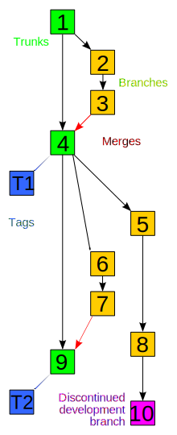

Git工作流
Presented by Zhang, Zijian
版本控制？but why？

项目经理说：“要有结构”

如雷贯耳的名字
最早的：Source Code Control System (1972)
C-S架构：Subversion (2000)
分布式架构：Git (2005)
最早的：Source Code Control System (1972)
C-S架构：Subversion (2000)
分布式架构：Git (2005)